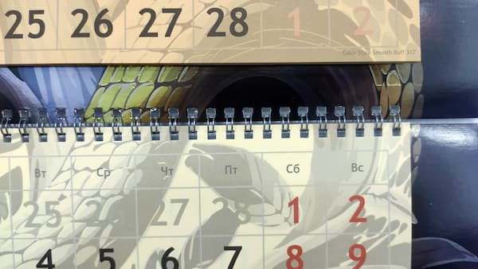
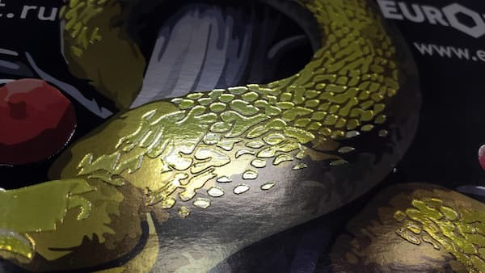

Корпоративный календарь — это не просто инструмент планирования, а мощный маркетинговый ресурс, который работает на имидж компании круглый год. Чтобы создать продукт, который запомнится клиентам, партнерам и сотрудникам, важно объединить инновационные материалы, креативный дизайн и экспертизу проверенных профессионалов.
Успех начинается с идеи. Календарь должен отражать ценности бренда, быть функциональным и эстетичным. Дизайн требует внимания к деталям: от выбора фотоматериалов до типографики.
Здесь ключевую роль играют материалы. Например, металлизированный картон и дизайнерские бумаги с тонировкой придают календарю премиальный вид. Для печати рекомендуем краски *RENK® DAIICHI-SPL* — они сочетают стойкость к истиранию и насыщенность цвета, идеально подходя для работы с невпитывающими поверхностями.
УФ-лакирование:
Тиснение, конгрев, вырубка- эти техники превращают календарь в тактильный арт-объект.
Учет сроков доставки особенно важен для компаний с клиентами в разных регионах.

Календарь-2025 от «ОктоПринт Сервис» — наглядный пример synergy материалов и мастерства.
Этот проект подтверждает: качественные расходные материалы — основа впечатляющего результата.
Как типография, работающая с материалами «ОктоПринт», мы гарантируем:
Корпоративный календарь — это инвестиция в имидж. Доверьте его создание тем, кто знает секрет идеального сочетания технологий и креатива:
Свяжитесь с нами чтобы обсудить детали и получить персональное предложение. Пусть ваш календарь станет не просто инструментом, а произведением полиграфического искусства!
P.S. Ознакомьтесь с примером календаря от «ОктоПринт Сервис» — вдохновляйтесь и доверьте воплощение ваших идей нам! Вместе мы создадим продукт, который оценят и сотрудники, и клиенты.